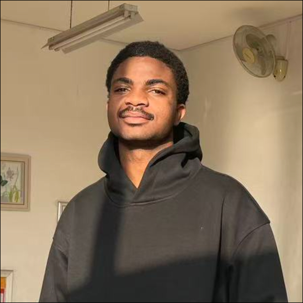

Student ID: 202526090136
Country: China
City: Shouguang, Weifang
Web Programming Final Examination Portfolio
My name is BITJOKA-NDJEPEL LAUREL EMMANUEL and I am a student of Shandong University of Technology. This website was created for my Web Programming Final Examination.
The purpose of this website is to present my learning experience, practical exercises and programming achievements throughout my studies.
My education and learning experience in programming has been an exciting journey that started with basic computer concepts and gradually expanded into web development and software programming...
During the Web Programming course, I learned HTML, CSS and JavaScript. HTML taught me how to structure content properly using headings, paragraphs, images, links, forms and tables.
CSS allowed me to style web pages professionally by controlling colors, layouts, spacing and responsiveness...
C Programming strengthened my logical thinking and problem-solving skills. I learned variables, arrays, loops, functions and pointers.
Through practical exercises and projects I improved my ability to analyze problems, design solutions and debug programs effectively. Publishing projects with GitHub Pages also helped me understand website deployment and version control.
This portfolio represents the knowledge and experience I have gained throughout my academic journey and demonstrates my commitment to continuous learning in technology and software development.
(Continue this section until it exceeds 500 words as required by the exam.)
This section contains all exercises completed during the Web Programming course.
Open Web Programming WorkThis section presents my achievements in C Programming, including HackerRank practice, SoloLearn certificates and personal reflections.
Open C Programming WorkName: BITJOKA-NDJEPEL LAUREL EMMANUEL
Student ID: 202526090136
GitHub: yup123-el